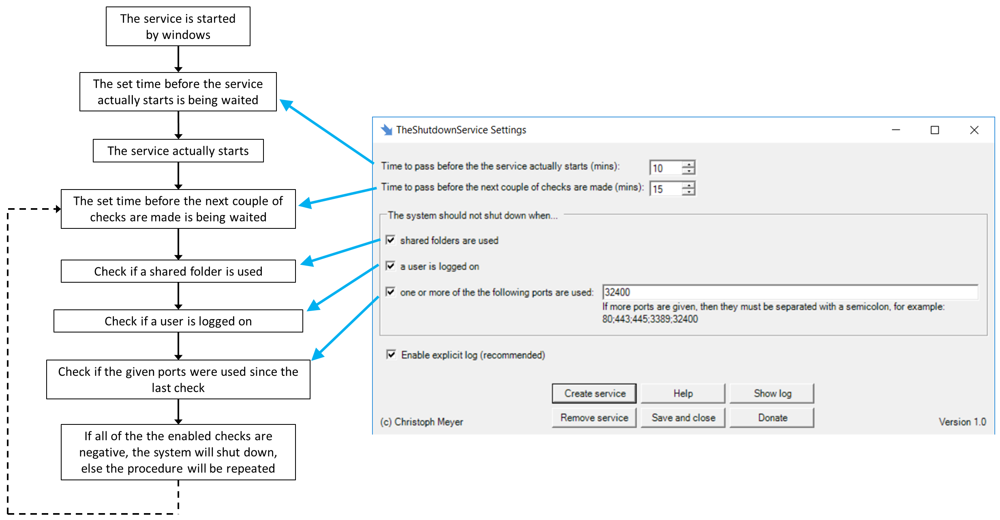
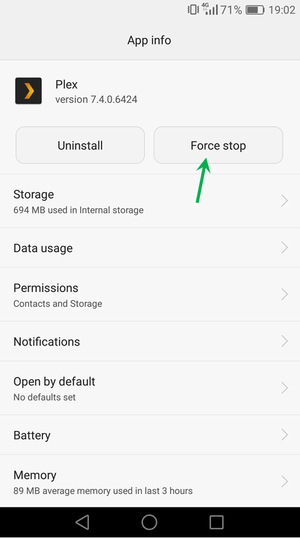

TheShutdownService
- How to install the program
- How the program works and how to use the GUI
- How to uninstall the program
- Common problems
- The PC won't shut down
How to install the program
- Install Winpcap (download here)
- Copy the files into a folder of your choice, e.g. C:\Program Files\TheShutdownService (the folder must be writable)
- If you want you can add a shortcut of TheShutdownService.exe to your desktop
- Open TheShutdownService.exe, click on Create service, adjust the settings and click on Save and close
- Done. Now when you restart your pc and none of the checks is positive, it will automatically shut down.
How the program works and how to use the GUI
How to delete the program
- Open TheShutdownService.exe and click on Remove service, then close it.
- Delete the folder where the files are in
- Uninstall Winpcap
- Done.
Common problems
- Your computer must fulfill the system requirements
- Make sure your settings are saved correctly
- The folder which contains all the program files must be writable
- Winpcap 64-Bit must be installed correctly (I'm using version 4.1.3)
- The program files may be damaged, so download them again
- Maybe your anitvirus software is blocking the program, if this is the case, add it to its whitelist
Every problem can be avoided by following these rules:
The PC won't shut down
- First of all, enable the explicit log, then you can see what's the reason
- Disable portforwarding on your router, because a port seems to be used when there was a portscan from anywhere in the internet
- Some applications will go on running even when you close them.
Open your taskmanager and close this application.
Your mobile phone also does this. Go into its settings and force stop the application:
 - Really log off and not just lock your computer
May this help you:
Ⓒ Christoph Meyer